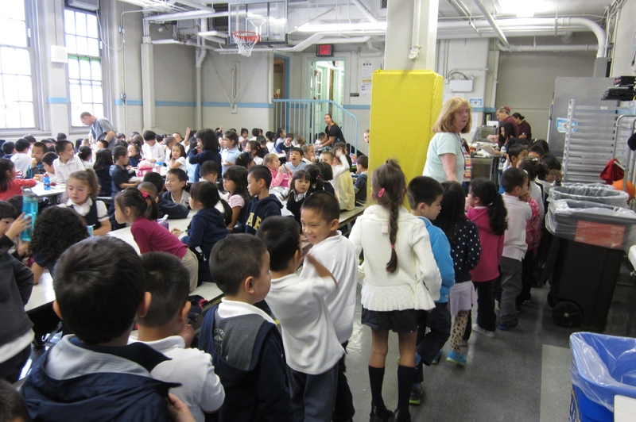

A playroom at P.S. 176 in Brooklyn was turned into an extra cafeteria because of overcrowding. (Credit: Beth Fertig / WNYC )
Every New Yorker is used to jostling strangers on sidewalks and in the subway. But students in the city’s public schools don’t get a respite from the crowds during the day: more than half of New York City’s public schools are overcrowded, some dramatically so.
According to 2016 research, more than 575,000 students in grades K-12 attend a school that is past 100% capacity. “Class sizes went up sharply in all grades, but especially grades 1-3, after 2007,” due to budget cuts, said Leonie Haimson, director of Class Size Matters, an advocacy group that lobbies for smaller classes.
At some crowded schools, lunch begins at 9:30. At others, students attend school in shifts. Gymnasiums, auditoriums, and art and music rooms have been converted into academic space.
Overcrowding impacts nearly every district in the city. But some districts are downright bursting at the seams. District 20, which covers Bay Ridge, Dyker Heights, Sunset Park, and Bensonhurst, has led the pack in recent years. The community has welcomed a sharp influx of residents in recent years: immigrants drawn to established Arab, Chinese, and Latino communities, as well as New Yorkers priced out of other Brooklyn neighborhoods or attracted to what remains a high-performing public school system.
While advocates suggest that the city needs to build new schools and expand existing ones, the problem of overcrowding will likely not be solved any time soon. DOE’s 2015 capital plan has so far funded 41,177 new K-8 seats. But the city needs at least 75,531 new seats, according to the city’s own estimates – which do not account for an increasing population citywide.
About the Data: All crowding numbers refer to elementary/middle school capacity as of June 2017, collected from the Mayor's Office of Operations "Agency Performance Mapping Report". The author copied data individually into a table (accessible here; any errors during the transfer are the author's.
Map data was taken NYC Planning's Open Data. School district shapefiles acquired here. Descriptions of the neighborhoods encompassed in each district were taken from InsideSchools.org.